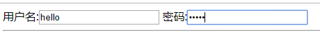
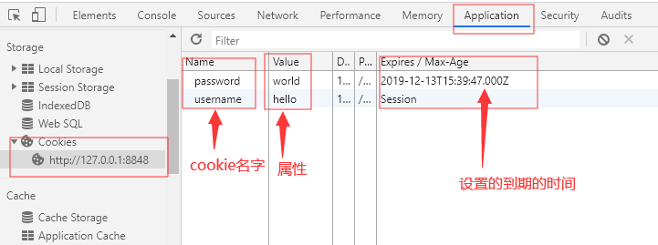
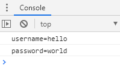
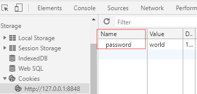

什么是插件？
基于jQuery的语法，按照一定规范书写，具有特定功能的脚本文件，称为插件。
插件除了js文件之外，有的还包含css文件，图片和字体等资源文件。
在jQuery的官网https://jquery.com/搜索和下载需要的插件。
<head>
<meta charset="utf-8">
<title>cookie插件的使用</title>
<!-- 首先引入jQuery -->
<script src="js/jquery-1.11.3.js" type="text/javascript" charset="utf-8"></script>
<!-- 插件基于jQuery，然后再引入下载的cookie插件 -->
<script src="../js/cookie/jquery.cookie.js" type="text/javascript" charset="utf-8"></script>
</head>cookie是什么？
cookie就是浏览器存储在用户电脑上的一小段文本文件。一个web页面或服务器会告知浏览器按照一定规范来存储这些信息，并在之后的请求中将这些信息发送至服务器。web服务器就可以使用这些信息来识别不同的用户。例如，访问一个网站输入账号密码，如保存密码则在cookie的有效期内再次访问网站时不会再输入账号密码。
在jQuery的官网，下载插件的页面都会有相应的使用文档。
<script type="text/javascript">
function doAdd(){
//cookie的名字的属性
$.cookie("username",$("#userName").val());//未指定过期时间，则会在关闭浏览器或过期。
$.cookie("password",$("#passWord").val(),{expires:7});//指定有效期,7代表的是7天
}
</script>设置输入框和按钮框并绑定。
<body>
用户名:<input type="text" name="" id="userName" value="" />
密码:<input type="password" name="" id="passWord" value="" />
<hr >
<input type="button" name="" id="" value="添加cookie" onclick="doAdd()" />
</body>当在input中输入用户名密码后点击按钮调用doAdd函数


//读取cookie
function doRead(){
//读取指定名字的cookies
console.log($.cookie("username"));//直接调用cookie方法获取名字
}读取所有cokkie,需要使用each()方法遍历
<script type="text/javascript">
function doAdd(){
//cookie的名字的属性
$.cookie("username",$("#userName").val());//未指定过期时间，则会在关闭浏览器或过期。
$.cookie("password",$("#passWord").val(),{expires:7});//指定有效期,7代表的是7天
}
//读取cookie
function doRead(){
//读取所有cookie
var cookies = $.cookie();
$.each(cookies,function(key,value){
console.log(key+ "=" +value);
});
}
</script>
设置按钮并绑定
<input type="button" name="" id="" value="读取cookie" onclick="doRead()"/>在控制台输出

和读取类似
<script type="text/javascript">
//删除
function removeDel(){
$.removeCookie("username");
}
</script>调用方法获取到想要删除的cookie名字
设置按钮并绑定
<input type="button" name="" id="" value="删除cookie" onclick="removeDel()"/>这里删除了username
